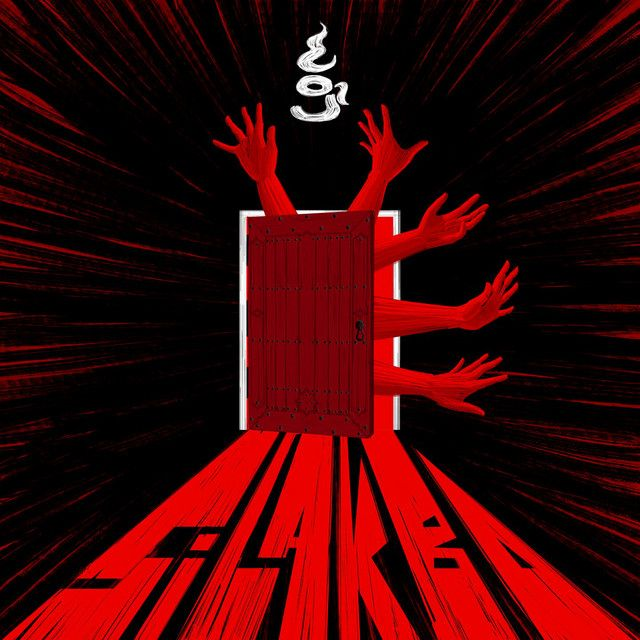

Cup Of Joe
'Di na mabura ang iyong mga larawan
'Di alam kung sa'n tutungo ang mga hakbang patalikod naghihingalo
Ang lapis na ginamit sa kuwento nating naudlot
Bawat buklat ng aklat binabalikan
Mga liham na ang laman ligayang dala
Ikaw lang ang may akda
Sa lahat ng pahinang sinulat ng tadhana'y
Ikaw at ikaw at ikaw pa rin
Ang yugtong paulit-ulit kong babalik-balikan
Sigaw ay sigaw ay ikaw pa rin
Patuloy kong panghahawakan ang 'yong mga salitang
Hindi na nakikita sa tingin ng 'yong mga mata
Ngunit kung sarado na ang puso sa nadarama
Puwede bang isipin mo kung bakit tayo nagsimula
Ating katotohana'y
Naging isang nobelang
Winakasan ng pagdududang
'Di na nalabanan
Nais na maramdaman muli
Kung pa'no isulat ang pangalan mo
Ngunit bawat letra'y mahirap nang iguhit
Dahil binubuo nila ang 'yong mga pangako
Sa lahat ng pahinang sinulat ng tadhana'y
Ikaw at ikaw at ikaw pa rin
Ang yugtong paulit-ulit kong babalik-balikan
Sigaw ay sigaw ay ikaw pa rin
Simula sa wakas na 'di matuklasan
Pabalik kung saan 'di na natagpuan
Ang mga matang nakatanaw sa umpisa
Ng yugtong 'di na sana naisulat pa
Simula sa wakas na 'di matuklasan
Pabalik kung saan 'di na natagpuan
Ang mga matang nakatanaw sa umpisa
Ng yugtong 'di na sana naisulat pa
Sa lahat ng pahinang sinulat ng tadhana'y
Ikaw at ikaw at ikaw pa rin
Ang yugtong paulit-ulit kong babalik-balikan
Sigaw ay sigaw ay ikaw pa rin
Patuloy kong panghahawakan ang 'yong mga salitang
Hindi na nakikita sa tingin ng 'yong mga mata
Ngunit kung sarado na ang puso sa nadarama
Pwede bang isipin mo kung bakit tayo nagsimula
Simula sa wakas na 'di matuklasan
Pabalik kung saan 'di na natagpuan (ikaw at ikaw at ikaw pa rin)
Ang mga matang nakatanaw sa umpisa (sigaw ay sigaw ay)
Ng yugtong 'di na sana naisulat